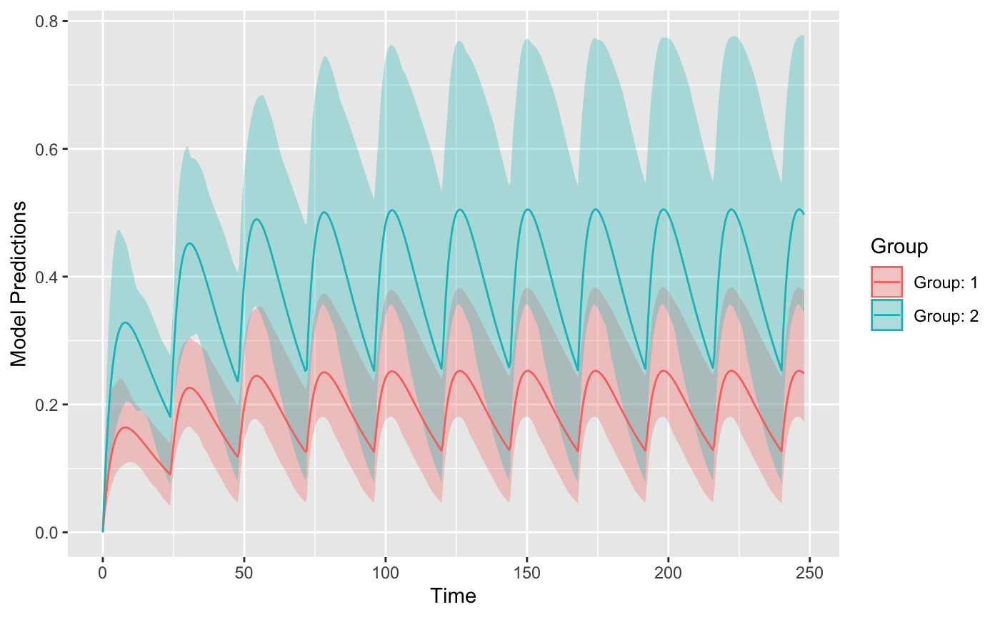
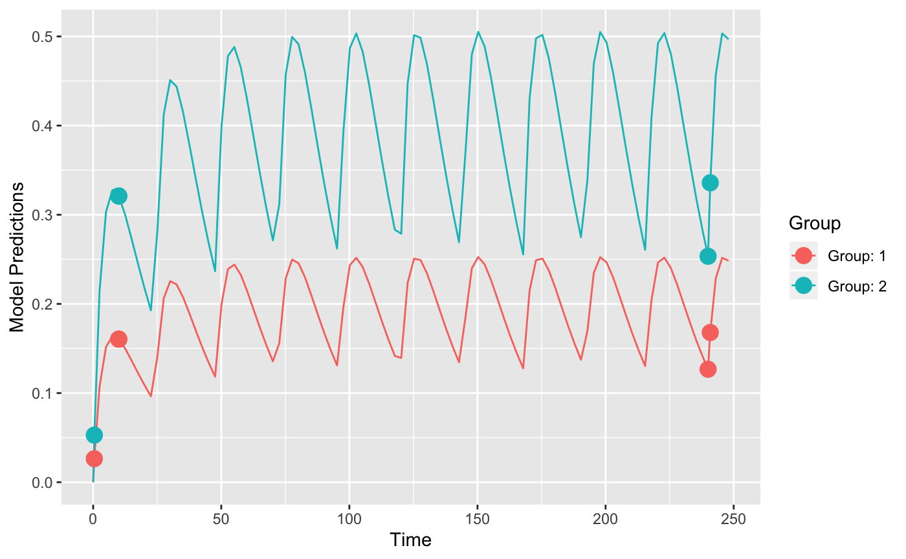
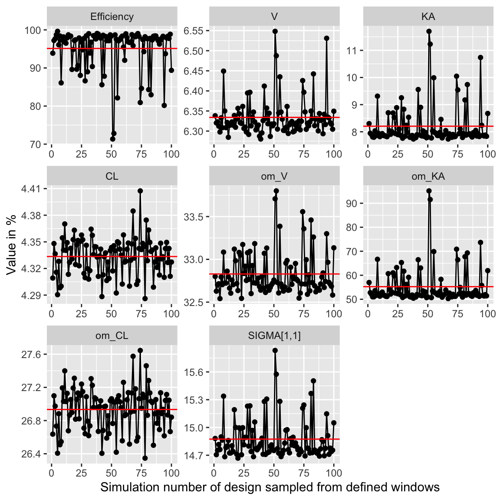
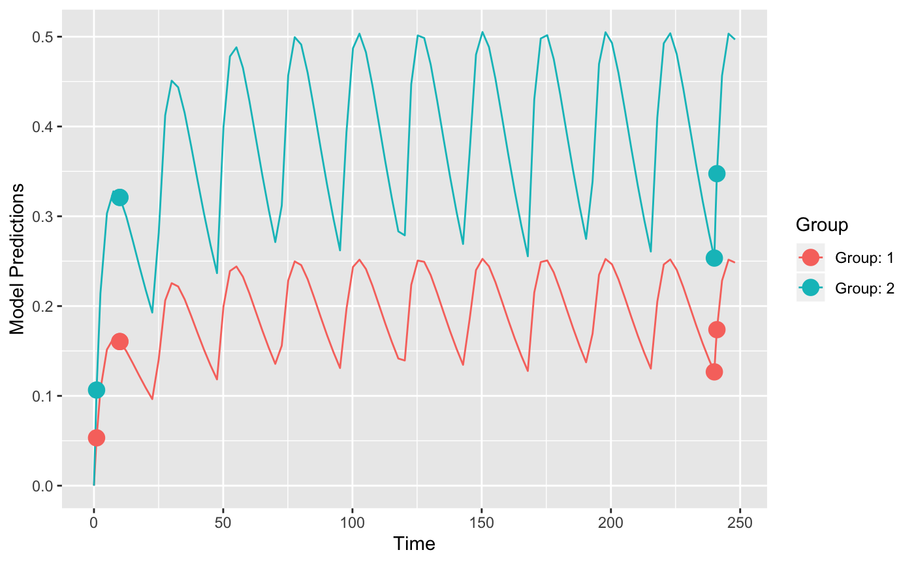
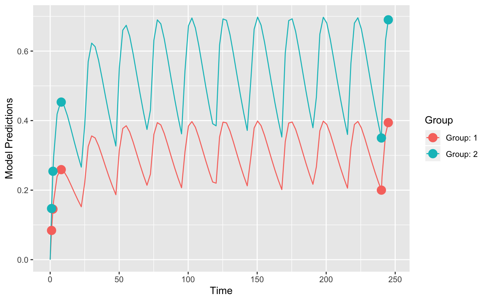

PopED computes optimal experimental designs for both population and individual studies based on nonlinear mixed-effect models. Often this is based on a computation of the Fisher Information Matrix (FIM).
To get started you need to define
There are a number of functions to help you with these tasks. See ?poped for more information.
Below is an example to introduce the package. The code in the below example, and several other examples, are available as r-scripts in the “examples” folder in the PopED installation directory located at:
You can view a list of the example files using the commands:
You can then open one of the examples (for example, ex.1.a.PK.1.comp.oral.md.intro.R, the code found in this vignette) using the following code
file_name <- "ex.1.a.PK.1.comp.oral.md.intro.R"
ex_file <- system.file("examples",file_name,package="PopED")
file.copy(ex_file,tempdir(),overwrite = T)
file.edit(file.path(tempdir(),file_name))In addition, there is another vignette called “Examples” that explores the new features in each example.
Here we define a one-compartment pharmacokinetic model with linear absorption using an analytical solution. In this case the solution is applicable for both multiple and single dosing. Note that this function is also predefined in PopED as ff.PK.1.comp.oral.md.CL.
ff <- function(model_switch,xt,parameters,poped.db){
with(as.list(parameters),{
N = floor(xt/TAU)+1
y=(DOSE*Favail/V)*(KA/(KA - CL/V)) *
(exp(-CL/V * (xt - (N - 1) * TAU)) * (1 - exp(-N * CL/V * TAU))/(1 - exp(-CL/V * TAU)) -
exp(-KA * (xt - (N - 1) * TAU)) * (1 - exp(-N * KA * TAU))/(1 - exp(-KA * TAU)))
return(list( y=y,poped.db=poped.db))
})
}Next we define the parameters of this function, in this case log-normal distributions around the parameters (except for Favail). DOSE and TAU are defined as covariates (in vector a) so that we can optimize their values later.
sfg <- function(x,a,bpop,b,bocc){
parameters=c( V=bpop[1]*exp(b[1]),
KA=bpop[2]*exp(b[2]),
CL=bpop[3]*exp(b[3]),
Favail=bpop[4],
DOSE=a[1],
TAU=a[2])
}Now we define the residual unexplained variability (RUV) function, in this case the RUV has both an additive and proportional component.
feps <- function(model_switch,xt,parameters,epsi,poped.db){
returnArgs <- ff(model_switch,xt,parameters,poped.db)
y <- returnArgs[[1]]
poped.db <- returnArgs[[2]]
y = y*(1+epsi[,1])+epsi[,2]
return(list(y=y,poped.db=poped.db))
}We have now defined all aspects of the model.
Now we define the model parameter values, the initial design and design space for optimization.
In this example, the parameter values are defined for the fixed effects (bpop), the between-subject variability variances (d) and the residual variability variances (sigma). We also fix the parameter Favail using notfixed_bpop, since we have only oral dosing and the parameter is not identifiable.
Fixing a parameter means that we assume the parameter will not be estimated (and is know without uncertainty). In addition, we fix the small additive RUV term, as this term is reflecting the higher error expected at low concentration measurements (limit of quantification measurements) and would typically be calculated from analytical assay methods (for example, the standard deviation of the parameter might be 20% of the limit of quantification).
For the initial design, we define two groups (m=2) of 20 individuals (groupsize=20), with doses of 20 mg or 40 mg every 24 hours (a). The initial design has 5 sample times per individual (xt).
For the design space, which can be searched during optimization, we define a potential dose range of between 0 and 200 mg (mina and maxa), and a range of potential sample times between 0 and 10 hours for the first three samples and between 240 and 248 hours for the last two samples (minxt and maxxt).
Finally, we fix the two groups of subjects to have the same sample times (bUseGrouped_xt=TRUE).
poped.db <- create.poped.database(ff_fun=ff,
fg_fun=sfg,
fError_fun=feps,
bpop=c(V=72.8,KA=0.25,CL=3.75,Favail=0.9),
notfixed_bpop=c(1,1,1,0),
d=c(V=0.09,KA=0.09,CL=0.25^2),
sigma=c(0.04,5e-6),
notfixed_sigma=c(1,0),
m=2,
groupsize=20,
a=list(c(DOSE=20,TAU=24),c(DOSE=40, TAU=24)),
maxa=c(DOSE=200,TAU=24),
mina=c(DOSE=0,TAU=24),
xt=c( 1,2,8,240,245),
minxt=c(0,0,0,240,240),
maxxt=c(10,10,10,248,248),
bUseGrouped_xt=TRUE)First it may make sense to check your model and design to make sure you get what you expect when simulating data. Here we plot the model typical values:
Next, we plot the model typical values prediction intervals taking into account the between-subject variability (you can even investigate the effects of the residual, unexplained, variability with the DV=TRUE argument) but without sampling times:

We can get these predictions numerically as well:
dat <- model_prediction(poped.db,DV=TRUE)
head(dat,n=5);tail(dat,n=5)
#> ID Time DV IPRED PRED Group Model DOSE TAU
#> 1 1 1 0.04422501 0.05747039 0.05325024 1 1 20 24
#> 2 1 2 0.08522768 0.09828859 0.09204804 1 1 20 24
#> 3 1 8 0.11048943 0.17340393 0.16409609 1 1 20 24
#> 4 1 240 0.17322493 0.22959440 0.12671376 1 1 20 24
#> 5 1 245 0.46941713 0.35619950 0.24980320 1 1 20 24
#> ID Time DV IPRED PRED Group Model DOSE TAU
#> 196 40 1 0.1500322 0.1613167 0.1065005 2 1 40 24
#> 197 40 2 0.2746268 0.2762786 0.1840961 2 1 40 24
#> 198 40 8 0.4568408 0.4497718 0.3281922 2 1 40 24
#> 199 40 240 0.2097838 0.1769645 0.2534275 2 1 40 24
#> 200 40 245 0.6648005 0.5527004 0.4996064 2 1 40 24Next, we evaluate the initial design
evaluate_design(poped.db)
#> $ofv
#> [1] 39.309
#>
#> $fim
#> V KA CL om_V om_KA
#> V 0.05336692 -8.683963 -0.05863412 0.000000 0.000000
#> KA -8.68396266 2999.851007 -14.43058560 0.000000 0.000000
#> CL -0.05863412 -14.430586 37.15243290 0.000000 0.000000
#> om_V 0.00000000 0.000000 0.00000000 999.953587 312.240246
#> om_KA 0.00000000 0.000000 0.00000000 312.240246 439.412556
#> om_CL 0.00000000 0.000000 0.00000000 3.202847 2.287838
#> SIGMA[1,1] 0.00000000 0.000000 0.00000000 575.347261 638.581909
#> om_CL SIGMA[1,1]
#> V 0.000000 0.0000
#> KA 0.000000 0.0000
#> CL 0.000000 0.0000
#> om_V 3.202847 575.3473
#> om_KA 2.287838 638.5819
#> om_CL 3412.005199 1182.3255
#> SIGMA[1,1] 1182.325475 33864.3226
#>
#> $rse
#> V KA CL om_V om_KA om_CL
#> 8.215338 10.090955 4.400304 39.844763 60.655110 27.562541
#> SIGMA[1,1]
#> 13.865357We see that the fixed-effect and residual variability parameters are relatively well estimated with this design, but the between-subject variability parameters are less well estimated.
We can compare the initial design to a similar design with sparse sampling, i.e. having only 3 time points: xt = c(1,2,245).
poped.db.new <- create.poped.database(ff_fun=ff,
fg_fun=sfg,
fError_fun=feps,
bpop=c(V=72.8,KA=0.25,CL=3.75,Favail=0.9),
notfixed_bpop=c(1,1,1,0),
d=c(V=0.09,KA=0.09,CL=0.25^2),
sigma=c(0.04,5e-6),
notfixed_sigma=c(1,0),
m=2,
groupsize=20,
a=list(c(DOSE=20,TAU=24),c(DOSE=40, TAU=24)),
maxa=c(DOSE=200,TAU=24),
mina=c(DOSE=0,TAU=24),
xt=c( 1,2,245),
minxt=c(0,0,240),
maxxt=c(10,10,248),
bUseGrouped_xt=TRUE)evaluate_design(poped.db.new)
#> $ofv
#> [1] 29.66484
#>
#> $fim
#> V KA CL om_V om_KA
#> V 0.04243232 -10.51432 0.05782431 0.000000 0.000000
#> KA -10.51432135 2666.25466 -14.66678102 0.000000 0.000000
#> CL 0.05782431 -14.66678 21.59743298 0.000000 0.000000
#> om_V 0.00000000 0.00000 0.00000000 632.163776 457.737062
#> om_KA 0.00000000 0.00000 0.00000000 457.737062 347.115999
#> om_CL 0.00000000 0.00000 0.00000000 3.115099 2.363458
#> SIGMA[1,1] 0.00000000 0.00000 0.00000000 348.477101 262.369792
#> om_CL SIGMA[1,1]
#> V 0.000000 0.0000
#> KA 0.000000 0.0000
#> CL 0.000000 0.0000
#> om_V 3.115099 348.4771
#> om_KA 2.363458 262.3698
#> om_CL 1153.026981 1979.2314
#> SIGMA[1,1] 1979.231386 15617.8185
#>
#> $rse
#> V KA CL om_V om_KA om_CL
#> 44.120338 51.256239 5.748842 207.941540 280.689945 53.350716
#> SIGMA[1,1]
#> 22.795275The precision on CL (bpop[3]) is similar with the alternative design but the other parameters are less well estimated with the alternative design.
It is possible to compare the objective function value (ofv) and see that for this dummy example the alternative design (less samples per subject) the ofv is smaller (=worse). This value can also be used to optimize sampling times, doses, and other design features.
Now we can optimize the sample times of the design1.
summary(output)
#> ===============================================================================
#> FINAL RESULTS
#> Optimized Sampling Schedule
#> Group 1: 0.4574 10 10 240 240.9
#> Group 2: 0.4574 10 10 240 240.9
#>
#> OFV = 40.5277
#>
#> Efficiency:
#> ((exp(ofv_final) / exp(ofv_init))^(1/n_parameters)) = 1.1902
#>
#> Expected relative standard error
#> (%RSE, rounded to nearest integer):
#> Parameter Values RSE_0 RSE
#> V 72.8 8 6
#> KA 0.25 10 8
#> CL 3.75 4 4
#> om_V 0.09 40 33
#> om_KA 0.09 61 50
#> om_CL 0.0625 28 26
#> SIGMA[1,1] 0.04 14 15
#>
#> Total running time: 16.393 seconds
plot_model_prediction(output$poped.db)
We see that there are four distinct sample times for this design. This means that for this model, with these exact parameter values, that the most information from the study to inform the parameter estimation is with these sample times.
Of course, this means that there are multiple samples at some of these time points. We can explore a more practical design by looking at the loss of efficiency if we spread out sample times in a uniform distribution around these optimal points (\(\pm 30\) minutes).

Here we see the efficiency (\((|FIM_{optimized}|/|FIM_{initial}|)^{1/npar}\)) drops below 80% in some cases, which is mostly caused by an increase in the D[2,2] parameter uncertainty (BSV on absorption). Smaller windows or different windowing on different samples might be needed. To investigate see ?plot_efficiency_of_windows.
In the previous example we optimized over a continuous design space (sample times could be optimized to be any value between a lower and an upper limit). We could also limit the search to only “allowed” values, for example, only samples taken on the hour are allowed.
poped.db.discrete <- create.poped.database(poped.db,discrete_xt = list(c(0:10,240:248)))
output_discrete <- poped_optim(poped.db.discrete, opt_xt=TRUE)summary(output_discrete)
#> ===============================================================================
#> FINAL RESULTS
#> Optimized Sampling Schedule
#> Group 1: 1 10 10 240 241
#> Group 2: 1 10 10 240 241
#>
#> OFV = 40.3782
#>
#> Efficiency:
#> ((exp(ofv_final) / exp(ofv_init))^(1/n_parameters)) = 1.165
#>
#> Expected relative standard error
#> (%RSE, rounded to nearest integer):
#> Parameter Values RSE_0 RSE
#> V 72.8 8 6
#> KA 0.25 10 8
#> CL 3.75 4 4
#> om_V 0.09 40 32
#> om_KA 0.09 61 53
#> om_CL 0.0625 28 27
#> SIGMA[1,1] 0.04 14 15
#>
#> Total running time: 7.912 seconds
plot_model_prediction(output_discrete$poped.db)
Here we see that the optimization ran somewhat quicker, but gave a less efficient design.
One could also optimize over dose, to see if a different dose could help in parameter estimation .
In this case the results are predictable … higher doses give observations with somewhat lower absolute residual variability leading to both groups at the highest allowed dose levels (200 mg in this case).
Optimizing the dose of a study just to have better model parameter estimates may be somewhat implausible. Instead, let’s use a cost function to optimize dose based on some sort of target concentration … perhaps typical population trough concentrations of 0.2 and 0.35 for the two groups of patients at 240 hours.
First we define the criteria we use to optimize the doses, here a least squares minimization.
crit_fcn <- function(poped.db,...){
pred_df <- model_prediction(poped.db)
sum((pred_df[pred_df["Time"]==240,"PRED"] - c(0.2,0.35))^2)
}
crit_fcn(output$poped.db)
#> [1] 0.01469712Now we minimize the cost function
output_cost <- poped_optim(poped.db, opt_a = TRUE, opt_xt = FALSE,
ofv_fun=crit_fcn,
maximize = FALSE)summary(output_cost)
#> ===============================================================================
#> FINAL RESULTS
#>
#> Optimized Covariates:
#> Group 1: 31.5672 : 24
#> Group 2: 55.2426 : 24
#>
#> OFV = 6.58259e-15
#>
#> Efficiency:
#> (ofv_final / ofv_init) = 4.4788e-13
#>
#> Expected relative standard error
#> (%RSE, rounded to nearest integer):
#> Parameter Values RSE_0 RSE
#> V 72.8 8 8
#> KA 0.25 10 10
#> CL 3.75 4 4
#> om_V 0.09 40 40
#> om_KA 0.09 61 60
#> om_CL 0.0625 28 28
#> SIGMA[1,1] 0.04 14 14
#>
#> Total running time: 3.435 seconds
get_rse(output_cost$FIM, output_cost$poped.db)
#> V KA CL om_V om_KA om_CL
#> 8.207404 10.070674 4.399378 39.808012 60.478363 27.549531
#> SIGMA[1,1]
#> 13.800551
plot_model_prediction(output_cost$poped.db)
Tip: to make the optimization run faster use the option parallel = TRUE in the poped_optim command.↩